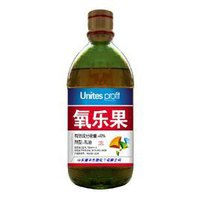

Dec 20 2020 鹿角秘境編輯部撰寫
要說鹿角蕨生蟲，最可能是介殼蟲，這是一種白色小蟲，常在高溫、乾燥、通風不良時出現。該蟲以刺吸式口器吮吸葉片和小枝條上的汁液，造成植株葉片枯黃，嚴重時枝條或葉片枯死。
發現鹿角蕨上面的介殼蟲後，如果少量，大家可人工用毛筆刷除，再用水沖洗乾淨；如果介殼蟲大量，除了用水沖洗外，還應及時噴灑50%氧化樂果乳劑，這樣雙管齊下即可清除介殼蟲。
>|  |
氧化樂果氧化樂果又名氧樂果。化學名為O,O-二甲基-S-[2-（甲胺基）-2-氧代乙基]硫代磷酸酯，純品為無色透明油狀液體，相對密度1.32，沸點約135℃，有分解， 折射率1.4987，可與水、乙醇和烴類等多種溶劑混溶，微溶于乙醚，幾乎不溶于石油醚。原油為淺黃至黃色透明油狀液體，氧化樂果乳油為淡黃色油狀液體。 氧化樂果還有很強的內吸殺蟲作用，可以被植株的莖、葉吸進人體內，並可傳送到未噴到葯液部，而使在上面危害的害蟲中毒死亡。因此，在使用氧化樂果時， 可以採用塗莖的方法施葯。一般情況下，溫度的高低對氧化樂果葯效的影響較小。氧化樂果屬于高毒農葯，但它不易從皮膚滲透進入人體，與樂果的接觸毒性差異不大。 |